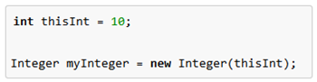

Click here to learn more geeksforgeeks
So What is This About?
The wrapper classes are part of the java.lang package which is imported by default into all Java programs.
AutoBoxing is the automatic conversion of a primitive value into an object of a corresponding wrapper class.
Unboxing is the automatic conversion of an object to it's corresponding primtive type.

Here is an example of the Integer Wrapper Class
Example:
List
for (int i = 1; i < 50; i += 2)
li.add(i);
Although you add the int values as primitive types, rather than Integer objects, to li, the code compiles. Because li is a list of Integer objects, not a list of int values, you may wonder why the Java compiler does not issue a compile-time error. The compiler does not generate an error because it creates an Integer object from i and adds the object to li. Thus, the compiler converts the previous code to the following at runtime.
Interesting Facts
The Byte, Integer, Double, Short, Long and Float wrapper classes extend the abstract Number class which extends the Object class.
Data structures in the Collection framework, such as ArrayList and Vector, store only objects (reference types) and not primitive types.